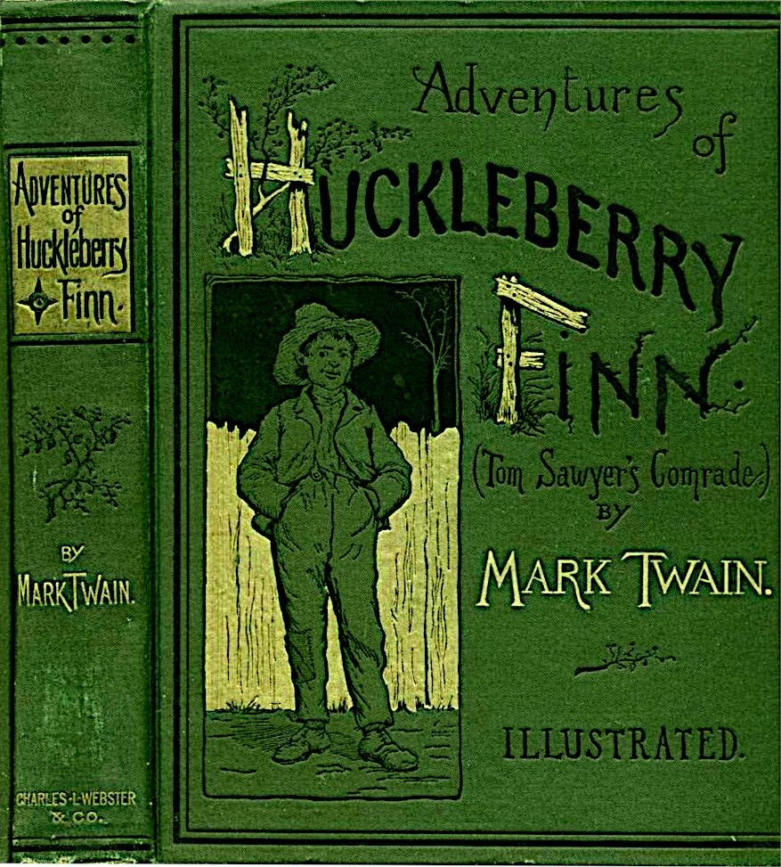
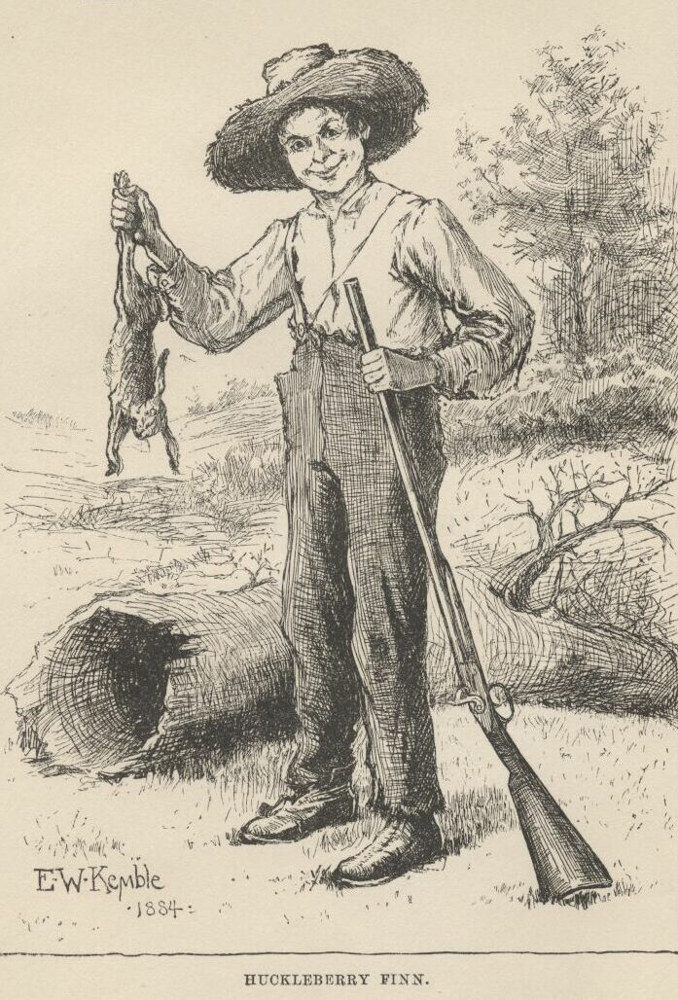
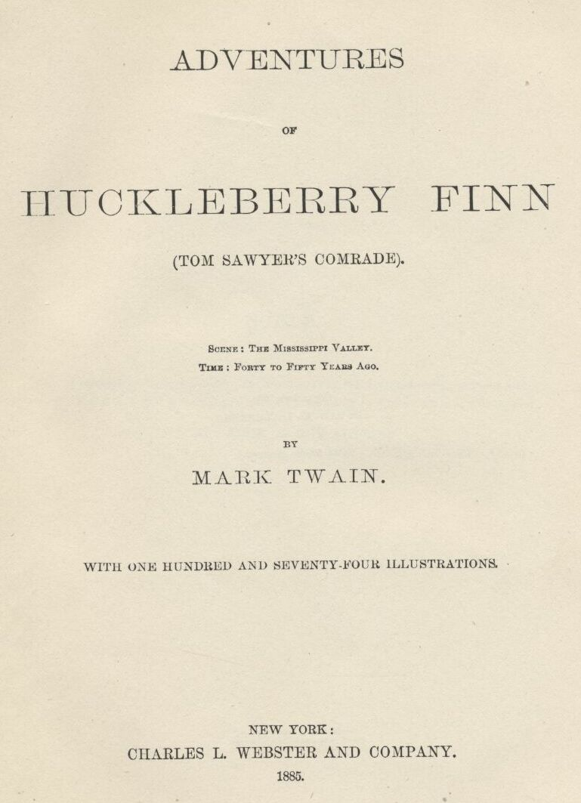
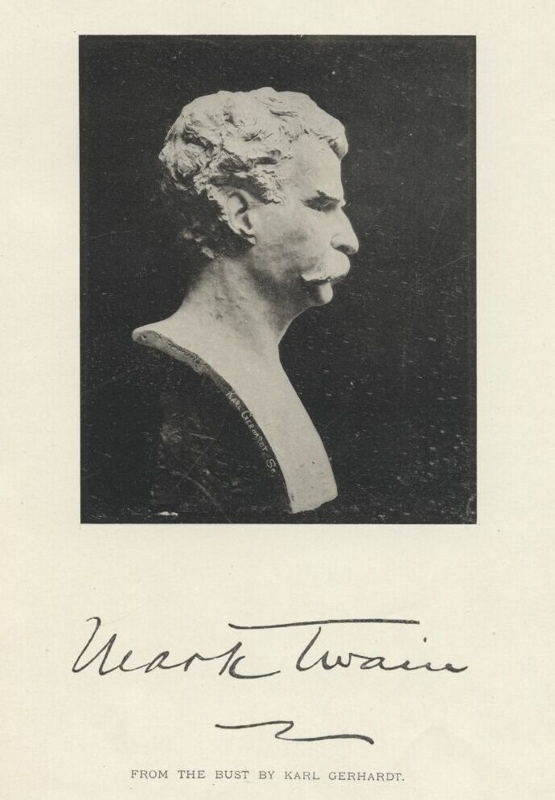

CHAPTER I.
Civilizing Huck.—Miss Watson.—Tom Sawyer Waits.
CHAPTER II.
The Boys Escape Jim.—Torn Sawyer’s Gang.—Deep-laid Plans.
CHAPTER III.
A Good Going-over.—Grace Triumphant.—“One of Tom Sawyers’s Lies”.
CHAPTER IV.
Huck and the Judge.—Superstition.
CHAPTER V.
Huck’s Father.—The Fond Parent.—Reform.
CHAPTER VI.
He Went for Judge Thatcher.—Huck Decided to Leave.—Political
Economy.—Thrashing Around.
CHAPTER VII.
Laying for Him.—Locked in the Cabin.—Sinking the Body.—Resting.
CHAPTER VIII.
Sleeping in the Woods.—Raising the Dead.—Exploring the Island.—Finding Jim.—Jim’s Escape.—Signs.—Balum.
CHAPTER IX.
The Cave.—The Floating House.
CHAPTER X.
The Find.—Old Hank Bunker.—In Disguise.
CHAPTER XI.
Huck and the Woman.—The Search.—Prevarication.—Going to Goshen.
CHAPTER XII.
Slow Navigation.—Borrowing Things.—Boarding the Wreck.—The Plotters.—Hunting for the Boat.
CHAPTER XIII.
Escaping from the Wreck.—The Watchman.—Sinking.
CHAPTER XIV.
A General Good Time.—The Harem.—French.
CHAPTER XV.
Huck Loses the Raft.—In the Fog.—Huck Finds the Raft.—Trash.
CHAPTER XVI.
Expectation.—A White Lie.—Floating Currency.—Running by Cairo.—Swimming Ashore.
CHAPTER XVII.
An Evening Call.—The Farm in Arkansaw.—Interior Decorations.—Stephen Dowling Bots.—Poetical Effusions.
CHAPTER XVIII.
Col. Grangerford.—Aristocracy.—Feuds.—The Testament.—Recovering the Raft.—The Wood—pile.—Pork and Cabbage.
CHAPTER XIX.
Tying Up Day—times.—An Astronomical Theory.—Running a Temperance Revival.—The Duke of Bridgewater.—The Troubles of Royalty.
CHAPTER XX.
Huck Explains.—Laying Out a Campaign.—Working the Camp—meeting.—A Pirate at the Camp—meeting.—The Duke as a Printer.
CHAPTER XXI.
Sword Exercise.—Hamlet’s Soliloquy.—They Loafed Around Town.—A Lazy Town.—Old Boggs.—Dead.
CHAPTER XXII.
Sherburn.—Attending the Circus.—Intoxication in the Ring.—The Thrilling Tragedy.
CHAPTER XXIII.
Sold.—Royal Comparisons.—Jim Gets Home-sick.
CHAPTER XXIV.
Jim in Royal Robes.—They Take a Passenger.—Getting Information.—Family Grief.
CHAPTER XXV.
Is It Them?—Singing the “Doxologer.”—Awful Square—Funeral Orgies.—A Bad Investment .
CHAPTER XXVI.
A Pious King.—The King’s Clergy.—She Asked His Pardon.—Hiding in the Room.—Huck Takes the Money.
CHAPTER XXVII.
The Funeral.—Satisfying Curiosity.—Suspicious of Huck,—Quick Sales and Small.
CHAPTER XXVIII.
The Trip to England.—“The Brute!”—Mary Jane Decides to Leave.—Huck Parting with Mary Jane.—Mumps.—The Opposition Line.
CHAPTER XXIX.
Contested Relationship.—The King Explains the Loss.—A Question of Handwriting.—Digging up the Corpse.—Huck Escapes.
CHAPTER XXX.
The King Went for Him.—A Royal Row.—Powerful Mellow.
CHAPTER XXXI.
Ominous Plans.—News from Jim.—Old Recollections.—A Sheep Story.—Valuable Information.
CHAPTER XXXII.
Still and Sunday—like.—Mistaken Identity.—Up a Stump.—In a Dilemma.
CHAPTER XXXIII.
A Nigger Stealer.—Southern Hospitality.—A Pretty Long Blessing.—Tar and Feathers.
CHAPTER XXXIV.
The Hut by the Ash Hopper.—Outrageous.—Climbing the Lightning Rod.—Troubled with Witches.
CHAPTER XXXV.
Escaping Properly.—Dark Schemes.—Discrimination in Stealing.—A Deep Hole.
CHAPTER XXXVI.
The Lightning Rod.—His Level Best.—A Bequest to Posterity.—A High Figure.
CHAPTER XXXVII.
The Last Shirt.—Mooning Around.—Sailing Orders.—The Witch Pie.
CHAPTER XXXVIII.
The Coat of Arms.—A Skilled Superintendent.—Unpleasant Glory.—A Tearful Subject.
CHAPTER XXXIX.
Rats.—Lively Bed—fellows.—The Straw Dummy.
CHAPTER XL.
Fishing.—The Vigilance Committee.—A Lively Run.—Jim Advises a Doctor.
CHAPTER XLI.
The Doctor.—Uncle Silas.—Sister Hotchkiss.—Aunt Sally in Trouble.
CHAPTER XLII.
Tom Sawyer Wounded.—The Doctor’s Story.—Tom Confesses.—Aunt Polly Arrives.—Hand Out Them Letters.
CHAPTER THE LAST.
Out of Bondage.—Paying the Captive.—Yours Truly, Huck Finn.
NOTICE.
Persons attempting to find a motive in this narrative will be prosecuted; persons attempting to find a moral in it will be banished; persons attempting to find a plot in it will be shot.
BY ORDER OF THE AUTHOR
PER G. G., CHIEF OF ORDNANCE.
EXPLANATORY
In this book a number of dialects are used, to wit: the Missouri negro dialect; the extremest form of the backwoods Southwestern dialect; the ordinary “Pike County” dialect; and four modified varieties of this last. The shadings have not been done in a haphazard fashion, or by guesswork; but painstakingly, and with the trustworthy guidance and support of personal familiarity with these several forms of speech.
I make this explanation for the reason that without it many readers would suppose that all these characters were trying to talk alike and not succeeding.
THE AUTHOR.
Scene: The Mississippi Valley Time: Forty to fifty years ago

You don’t know about me without you have read a book by the name of The Adventures of Tom Sawyer; but that ain’t no matter. That book was made by Mr. Mark Twain, and he told the truth, mainly. There was things which he stretched, but mainly he told the truth. That is nothing. I never seen anybody but lied one time or another, without it was Aunt Polly, or the widow, or maybe Mary. Aunt Polly—Tom’s Aunt Polly, she is—and Mary, and the Widow Douglas is all told about in that book, which is mostly a true book, with some stretchers, as I said before.
Now the way that the book winds up is this: Tom and me found the money that the robbers hid in the cave, and it made us rich. We got six thousand dollars apiece—all gold. It was an awful sight of money when it was piled up. Well, Judge Thatcher he took it and put it out at interest, and it fetched us a dollar a day apiece all the year round—more than a body could tell what to do with. The Widow Douglas she took me for her son, and allowed she would sivilize me; but it was rough living in the house all the time, considering how dismal regular and decent the widow was in all her ways; and so when I couldn’t stand it no longer I lit out. I got into my old rags and my sugar-hogshead again, and was free and satisfied. But Tom Sawyer he hunted me up and said he was going to start a band of robbers, and I might join if I would go back to the widow and be respectable. So I went back.
The widow she cried over me, and called me a poor lost lamb, and she called me a lot of other names, too, but she never meant no harm by it. She put me in them new clothes again, and I couldn’t do nothing but sweat and sweat, and feel all cramped up. Well, then, the old thing commenced again. The widow rung a bell for supper, and you had to come to time. When you got to the table you couldn’t go right to eating, but you had to wait for the widow to tuck down her head and grumble a little over the victuals, though there warn’t really anything the matter with them,—that is, nothing only everything was cooked by itself. In a barrel of odds and ends it is different; things get mixed up, and the juice kind of swaps around, and the things go better.
After supper she got out her book and learned me about Moses and the Bulrushers, and I was in a sweat to find out all about him; but by-and-by she let it out that Moses had been dead a considerable long time; so then I didn’t care no more about him, because I don’t take no stock in dead people.
Pretty soon I wanted to smoke, and asked the widow to let me. But she wouldn’t. She said it was a mean practice and wasn’t clean, and I must try to not do it any more. That is just the way with some people. They get down on a thing when they don’t know nothing about it. Here she was a-bothering about Moses, which was no kin to her, and no use to anybody, being gone, you see, yet finding a power of fault with me for doing a thing that had some good in it. And she took snuff, too; of course that was all right, because she done it herself.
Her sister, Miss Watson, a tolerable slim old maid, with goggles on, had just come to live with her, and took a set at me now with a spelling-book. She worked me middling hard for about an hour, and then the widow made her ease up. I couldn’t stood it much longer. Then for an hour it was deadly dull, and I was fidgety. Miss Watson would say, “Don’t put your feet up there, Huckleberry;” and “Don’t scrunch up like that, Huckleberry—set up straight;” and pretty soon she would say, “Don’t gap and stretch like that, Huckleberry—why don’t you try to behave?” Then she told me all about the bad place, and I said I wished I was there. She got mad then, but I didn’t mean no harm. All I wanted was to go somewheres; all I wanted was a change, I warn’t particular. She said it was wicked to say what I said; said she wouldn’t say it for the whole world; she was going to live so as to go to the good place. Well, I couldn’t see no advantage in going where she was going, so I made up my mind I wouldn’t try for it. But I never said so, because it would only make trouble, and wouldn’t do no good.
Now she had got a start, and she went on and told me all about the good place. She said all a body would have to do there was to go around all day long with a harp and sing, forever and ever. So I didn’t think much of it. But I never said so. I asked her if she reckoned Tom Sawyer would go there, and she said not by a considerable sight. I was glad about that, because I wanted him and me to be together.
Miss Watson she kept pecking at me, and it got tiresome and lonesome. By-and-by they fetched the niggers in and had prayers, and then everybody was off to bed. I went up to my room with a piece of candle, and put it on the table. Then I set down in a chair by the window and tried to think of something cheerful, but it warn’t no use. I felt so lonesome I most wished I was dead. The stars were shining, and the leaves rustled in the woods ever so mournful; and I heard an owl, away off, who-whooing about somebody that was dead, and a whippowill and a dog crying about somebody that was going to die; and the wind was trying to whisper something to me, and I couldn’t make out what it was, and so it made the cold shivers run over me. Then away out in the woods I heard that kind of a sound that a ghost makes when it wants to tell about something that’s on its mind and can’t make itself understood, and so can’t rest easy in its grave, and has to go about that way every night grieving. I got so down-hearted and scared I did wish I had some company. Pretty soon a spider went crawling up my shoulder, and I flipped it off and it lit in the candle; and before I could budge it was all shriveled up. I didn’t need anybody to tell me that that was an awful bad sign and would fetch me some bad luck, so I was scared and most shook the clothes off of me. I got up and turned around in my tracks three times and crossed my breast every time; and then I tied up a little lock of my hair with a thread to keep witches away. But I hadn’t no confidence. You do that when you’ve lost a horseshoe that you’ve found, instead of nailing it up over the door, but I hadn’t ever heard anybody say it was any way to keep off bad luck when you’d killed a spider.
I set down again, a-shaking all over, and got out my pipe for a smoke; for the house was all as still as death now, and so the widow wouldn’t know. Well, after a long time I heard the clock away off in the town go boom—boom—boom—twelve licks; and all still again—stiller than ever. Pretty soon I heard a twig snap down in the dark amongst the trees—something was a stirring. I set still and listened. Directly I could just barely hear a “me-yow! me-yow!” down there. That was good! Says I, “me-yow! me-yow!” as soft as I could, and then I put out the light and scrambled out of the window on to the shed. Then I slipped down to the ground and crawled in among the trees, and, sure enough, there was Tom Sawyer waiting for me.
We went tiptoeing along a path amongst the trees back towards the end of the widow’s garden, stooping down so as the branches wouldn’t scrape our heads. When we was passing by the kitchen I fell over a root and made a noise. We scrouched down and laid still. Miss Watson’s big nigger, named Jim, was setting in the kitchen door; we could see him pretty clear, because there was a light behind him. He got up and stretched his neck out about a minute, listening. Then he says:
“Who dah?”
He listened some more; then he come tiptoeing down and stood right between us; we could a touched him, nearly. Well, likely it was minutes and minutes that there warn’t a sound, and we all there so close together. There was a place on my ankle that got to itching, but I dasn’t scratch it; and then my ear begun to itch; and next my back, right between my shoulders. Seemed like I’d die if I couldn’t scratch. Well, I’ve noticed that thing plenty times since. If you are with the quality, or at a funeral, or trying to go to sleep when you ain’t sleepy—if you are anywheres where it won’t do for you to scratch, why you will itch all over in upwards of a thousand places. Pretty soon Jim says:
“Say, who is you? Whar is you? Dog my cats ef I didn’ hear sumf’n. Well, I know what I’s gwyne to do: I’s gwyne to set down here and listen tell I hears it agin.”
So he set down on the ground betwixt me and Tom. He leaned his back up against a tree, and stretched his legs out till one of them most touched one of mine. My nose begun to itch. It itched till the tears come into my eyes. But I dasn’t scratch. Then it begun to itch on the inside. Next I got to itching underneath. I didn’t know how I was going to set still. This miserableness went on as much as six or seven minutes; but it seemed a sight longer than that. I was itching in eleven different places now. I reckoned I couldn’t stand it more’n a minute longer, but I set my teeth hard and got ready to try. Just then Jim begun to breathe heavy; next he begun to snore—and then I was pretty soon comfortable again.
Tom he made a sign to me—kind of a little noise with his mouth—and we went creeping away on our hands and knees. When we was ten foot off Tom whispered to me, and wanted to tie Jim to the tree for fun. But I said no; he might wake and make a disturbance, and then they’d find out I warn’t in. Then Tom said he hadn’t got candles enough, and he would slip in the kitchen and get some more. I didn’t want him to try. I said Jim might wake up and come. But Tom wanted to resk it; so we slid in there and got three candles, and Tom laid five cents on the table for pay. Then we got out, and I was in a sweat to get away; but nothing would do Tom but he must crawl to where Jim was, on his hands and knees, and play something on him. I waited, and it seemed a good while, everything was so still and lonesome.
As soon as Tom was back we cut along the path, around the garden fence, and by-and-by fetched up on the steep top of the hill the other side of the house. Tom said he slipped Jim’s hat off of his head and hung it on a limb right over him, and Jim stirred a little, but he didn’t wake. Afterwards Jim said the witches bewitched him and put him in a trance, and rode him all over the State, and then set him under the trees again, and hung his hat on a limb to show who done it. And next time Jim told it he said they rode him down to New Orleans; and, after that, every time he told it he spread it more and more, till by-and-by he said they rode him all over the world, and tired him most to death, and his back was all over saddle-boils. Jim was monstrous proud about it, and he got so he wouldn’t hardly notice the other niggers. Niggers would come miles to hear Jim tell about it, and he was more looked up to than any nigger in that country. Strange niggers would stand with their mouths open and look him all over, same as if he was a wonder. Niggers is always talking about witches in the dark by the kitchen fire; but whenever one was talking and letting on to know all about such things, Jim would happen in and say, “Hm! What you know ’bout witches?” and that nigger was corked up and had to take a back seat. Jim always kept that five-center piece round his neck with a string, and said it was a charm the devil give to him with his own hands, and told him he could cure anybody with it and fetch witches whenever he wanted to just by saying something to it; but he never told what it was he said to it. Niggers would come from all around there and give Jim anything they had, just for a sight of that five-center piece; but they wouldn’t touch it, because the devil had had his hands on it. Jim was most ruined for a servant, because he got stuck up on account of having seen the devil and been rode by witches.
Well, when Tom and me got to the edge of the hilltop we looked away down into the village and could see three or four lights twinkling, where there was sick folks, maybe; and the stars over us was sparkling ever so fine; and down by the village was the river, a whole mile broad, and awful still and grand. We went down the hill and found Jo Harper and Ben Rogers, and two or three more of the boys, hid in the old tanyard. So we unhitched a skiff and pulled down the river two mile and a half, to the big scar on the hillside, and went ashore.
We went to a clump of bushes, and Tom made everybody swear to keep the secret, and then showed them a hole in the hill, right in the thickest part of the bushes. Then we lit the candles, and crawled in on our hands and knees. We went about two hundred yards, and then the cave opened up. Tom poked about amongst the passages, and pretty soon ducked under a wall where you wouldn’t a noticed that there was a hole. We went along a narrow place and got into a kind of room, all damp and sweaty and cold, and there we stopped. Tom says:
“Now, we’ll start this band of robbers and call it Tom Sawyer’s Gang. Everybody that wants to join has got to take an oath, and write his name in blood.”
Everybody was willing. So Tom got out a sheet of paper that he had wrote the oath on, and read it. It swore every boy to stick to the band, and never tell any of the secrets; and if anybody done anything to any boy in the band, whichever boy was ordered to kill that person and his family must do it, and he mustn’t eat and he mustn’t sleep till he had killed them and hacked a cross in their breasts, which was the sign of the band. And nobody that didn’t belong to the band could use that mark, and if he did he must be sued; and if he done it again he must be killed. And if anybody that belonged to the band told the secrets, he must have his throat cut, and then have his carcass burnt up and the ashes scattered all around, and his name blotted off of the list with blood and never mentioned again by the gang, but have a curse put on it and be forgot forever.
Everybody said it was a real beautiful oath, and asked Tom if he got it out of his own head. He said, some of it, but the rest was out of pirate-books and robber-books, and every gang that was high-toned had it.
Some thought it would be good to kill the families of boys that told the secrets. Tom said it was a good idea, so he took a pencil and wrote it in. Then Ben Rogers says:
“Here’s Huck Finn, he hain’t got no family; what you going to do ’bout him?”
“Well, hain’t he got a father?” says Tom Sawyer.
“Yes, he’s got a father, but you can’t never find him these days. He used to lay drunk with the hogs in the tanyard, but he hain’t been seen in these parts for a year or more.”
They talked it over, and they was going to rule me out, because they said every boy must have a family or somebody to kill, or else it wouldn’t be fair and square for the others. Well, nobody could think of anything to do—everybody was stumped, and set still. I was most r